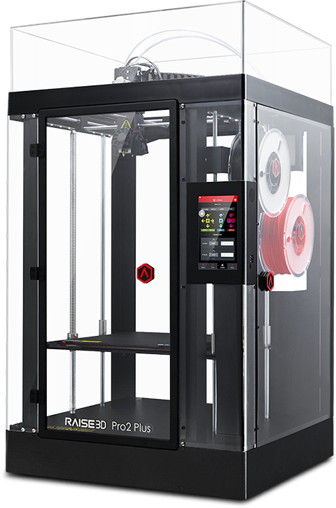
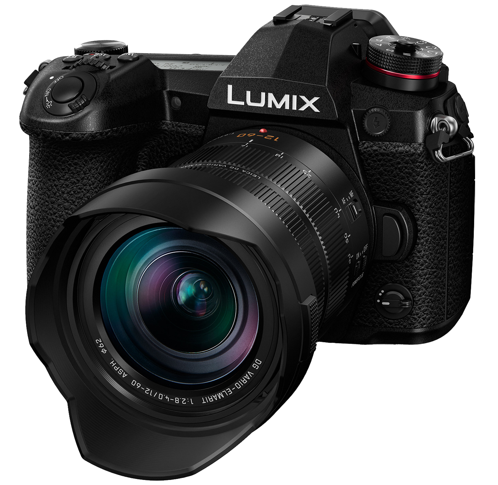

Air0Tek is an Ohio-based, non-profit STEM development firm looking to create and apply solutions to real world problems
Air0Tek is a small firm built by the Ashland High School Advanced STEM classes. We create solutions to real world problems while learning valuable skills that the STEM industry is looking for. The students working on Air0Tek projects write their own code, build their own engineering designs, and use our available technology to it’s fullest potential. Air0Tek is looking to expand into more fields of STEM and complete more projects in the coming months.
- Air0Tek Students
 Here at Air0Tek we have the privelage of using very unique and advanced tools. One of the most used tools here is the Raised3D Pro2Plus 3-D printer. The students are first taught how to used this printer along with the program called Tinkercad to create items such as a bottle opener. Another item which is used mostly by the advanced stem students is the Lumix S5 camera. This camera was used not only for pictures for this website, but also for future videos for the Air0Tek YouTube channel.

Innovation that Excites